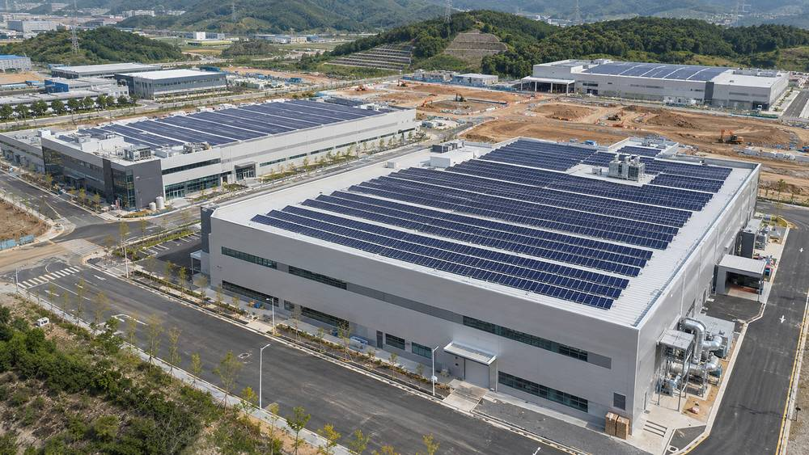

인천 검단2산단, 실시계획 단계부터 입주기업 옥상 태양광 의무화…지붕 임대·저가 전기 공급 제시

인천도시공사, 77만㎡ 산단에 RE100 문턱 낮추는 지원책 마련
인천도시공사(iH)가 추진하는 인천 서구 오류동 일대 77만㎡ 규모의 검단2일반산업단지가 실시계획 단계부터 산업시설용지 옥상 등에 태양광 설치를 의무화했다. 공공용지로 의무를 넓히는 방안도 검토한다. 이 산단은 2025년 9월 실시계획 승인, 2026년 3월 조성공사 착공을 거쳐 2030년 준공을 목표로 한다. 입주기업의 부담을 줄이기 위해 발전사업자와 연계한 지붕 임대, 저렴한 전기 공급, 정책금융을 활용한 직접 설치 등을 제시할 계획이다. 배경에는 글로벌 기업의 재생에너지 사용 요구가 커지는 흐름과 2027년부터 본격화하는 EU 탄소국경조정제도(CBAM) 인증서 납부가 있다. 임재욱 iH 도시개발본부장은 "국내 유일 환경 강소연구개발특구의 생산거점으로, 연구개발부터 제품 생산까지 환경산업의 전 과정이 인천 안에서 완결되는 상징적 사업"이라고 말했으나, 의무 설치 용량과 면적, 전기요금은 공개되지 않았다.
시민에너지 관점
77만㎡ 산단의 옥상에 태양광을 처음부터 의무로 묶는 것은, 2027년 CBAM 인증서 납부를 앞둔 기업에 재생에너지를 구할 길을 미리 열어 주는 일이다. 의무화가 입주 기업에 비용을 떠넘길 것이라는 우려가 있지만, 지붕 임대와 저가 전기 공급, 정책금융이 함께 제시된 것은 부담을 나누려는 설계다. 다만 기사에는 주민과 시민이 참여하거나 이익을 나누는 장치가 보이지 않는데, 독일 솔라콤플렉스처럼 주주 1,700명이 지분을 가진 시민 기업이 발전사업자로 참여하면 지붕 임대 수익을 지역에 남길 수 있다. 공기업이 개발하는 산단은 공공이 구조를 정할 수 있는 만큼, 설치 용량과 요금, 지역 참여 방식을 실시계획 단계에서 공개해야 한다.
출처: 경기일보 2026-11-07 이민우 원문 보기
仁川・黔丹2産団、実施計画の段階から入居企業の屋上太陽光を義務化…屋根賃貸・低価格電力の供給を提示
仁川都市公社、77万㎡の産団にRE100のハードルを下げる支援策
仁川都市公社（iH）が進める仁川市西区梧柳洞一帯の77万㎡規模の黔丹（コムダン）2一般産業団地が、実施計画の段階から産業施設用地の屋上などへの太陽光設置を義務化した。公共用地へ義務を広げる案も検討する。この団地は2025年9月に実施計画が承認され、2026年3月に造成工事に着工し、2030年の竣工を目標にしている。入居企業の負担を減らすため、発電事業者と連携した屋根賃貸、低価格での電力供給、政策金融を活用した直接設置などを示す計画だ。背景には、グローバル企業の再生可能エネルギー利用要求の高まりと、2027年から本格化するEU炭素国境調整メカニズム（CBAM）の証書納付がある。イム・ジェウクiH都市開発本部長は「国内唯一の環境強小研究開発特区の生産拠点として、研究開発から製品生産まで環境産業の全過程が仁川の中で完結する象徴的な事業」と述べたが、義務設置の容量や面積、電気料金は公表されていない。
市民エネルギーの視点
77万㎡の産団の屋上に、太陽光を最初から義務として結びつけるのは、2027年のCBAM証書納付を控えた企業に再生可能エネルギーを手に入れる道を前もって開く取り組みだ。義務化が入居企業にコストを押し付けるという懸念はあるが、屋根賃貸、低価格電力、政策金融が一緒に示されたのは負担を分ける設計である。ただ記事には住民や市民が参加したり利益を分けたりする仕組みが見えず、ドイツのソーラーコンプレックスのように株主1,700人が持分を持つ市民企業が発電事業者として加われば、屋根賃貸の収益を地域に残せる。公営企業が開発する産団は公共が仕組みを決められるだけに、設置容量と料金、地域参加の方法を実施計画の段階で公開すべきだ。
出典: 경기일보 2026-11-07 이민우 原文を読む
仁川黔丹2产业园从实施计划阶段起强制入驻企业屋顶安装光伏…提供屋顶租赁和低价供电
仁川都市公社为77万㎡产业园制定降低RE100门槛的扶持措施
仁川都市公社（iH）推进的仁川西区梧柳洞一带77万㎡规模的黔丹2一般产业园，从实施计划阶段起就强制要求在产业设施用地屋顶等处安装光伏。是否把强制范围扩大到公共用地也在研究之中。该产业园2025年9月获批实施计划，2026年3月开工建设，目标2030年竣工。为减轻入驻企业负担，计划提供与发电企业联动的屋顶租赁、低价供电以及利用政策金融自行安装等方案。背景是跨国企业对可再生能源使用的要求不断增加，以及自2027年起全面展开的欧盟碳边境调节机制（CBAM）凭证缴纳。iH城市开发本部长Im Jae-wook表示："这是国内唯一的环境强小研发特区的生产基地，从研发到产品生产的环保产业全过程都能在仁川完成，是具有象征意义的项目。"但强制安装的容量、面积和电价并未公开。
市民能源视角
从一开始就把77万㎡产业园的屋顶光伏设为强制，是在2027年CBAM凭证缴纳到来之前，提前为企业打开获取可再生能源的通道。有人担心强制要求会把成本转嫁给入驻企业，但同时提出屋顶租赁、低价供电和政策金融，是分担负担的设计。不过报道中看不到居民和市民参与或分享收益的机制，如果像德国Solarcomplex那样由1,700名股东持股的市民企业作为发电企业加入，屋顶租赁收益就能留在当地。由公营企业开发的产业园，结构本可由公共部门来定，因此安装容量、电价和地方参与方式应在实施计划阶段公开。
来源: 경기일보 2026-11-07 이민우 查看原文
Incheon's Geomdan 2 Industrial Park Mandates Rooftop Solar for Tenants From Planning Stage, Offers Roof Leasing and Low-Cost Power
Incheon Urban & Housing Corporation designs support to lower the RE100 hurdle for the 770,000㎡ park
The Geomdan 2 General Industrial Park, a 770,000㎡ site in Oryu-dong, Seo-gu, Incheon being developed by Incheon Urban & Housing Corporation (iH), has made solar installation on rooftops of industrial-facility land mandatory from the implementation-plan stage. Extending the requirement to public land is also under review. The park won its implementation-plan approval in September 2025, began construction in March 2026 and aims for completion in 2030. To ease the burden on tenants, iH plans to offer roof leasing tied to power producers, low-cost electricity and direct installation using policy finance. Behind the move are growing renewable-energy demands from global companies and the EU carbon border adjustment mechanism (CBAM), whose certificate payments begin in earnest in 2027. iH urban development head Im Jae-wook called it "a symbolic project in which the whole environmental industry chain, from research to production, is completed within Incheon, as the production base of the nation's only environmental special R&D zone," but the required installation capacity, area and power rates have not been disclosed.
Citizen Energy View
Tying rooftop solar to a 770,000㎡ park from the very start opens a route to renewable power for companies facing CBAM certificate payments in 2027. Some worry the mandate will push costs onto tenants, but offering roof leasing, low-cost power and policy finance together is a design for sharing the burden. The report shows no mechanism for residents or citizens to take part or share the gains, yet a citizen company with 1,700 shareholders like Germany's Solarcomplex joining as a power producer could keep roof-leasing income in the region. Because a park developed by a public corporation lets the public set the structure, the installation capacity, rates and the way locals take part should be disclosed at the implementation-plan stage.
Source: 경기일보 2026-11-07 이민우 Read the original